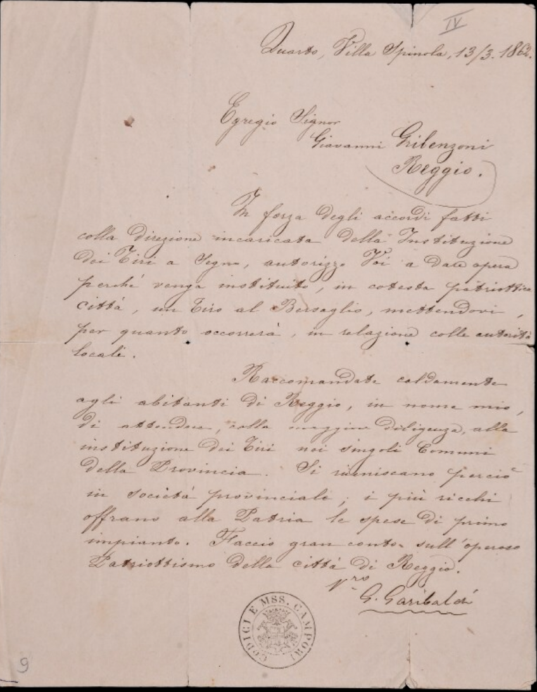
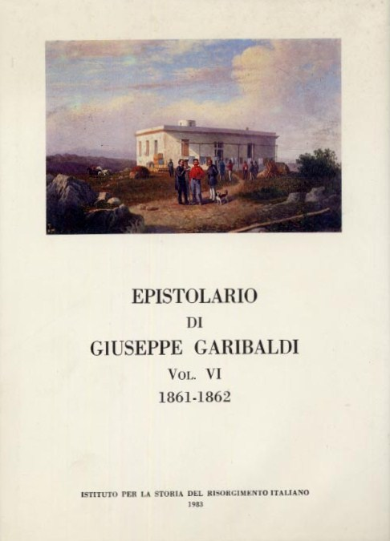
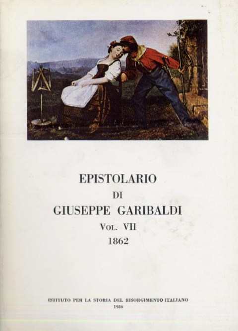

Giuseppe Garibaldi
Giuseppe Garibaldi is often remembered as a central figure in the nineteenth-century revolutionary movements, celebrated for his involvement in the Italian Risorgimento and his activities across South America. However, recent critical biographies and historiography invite a more nuanced, less hagiographic perspective that recognizes both the complexity and the contradictions of his trajectory (Milani 1982; Riall 2007; Carta 2013; Oneto 2011).
Garibaldi’s life was marked by significant mobility, both geographically and ideologically. Born in Nice in 1807, he was influenced by the cosmopolitan environment of the Mediterranean and by the radical ideas circulating among exiles from France and Italy (Riall 2007, 17–21). His early engagement with Mazzini’s Young Italy led to exile after a failed insurrection, and his subsequent years in South America were formative, but also ambiguous. While Garibaldi is often portrayed as a champion of oppressed peoples, sources indicate that his actions in Brazil and Uruguay included privateering and violent raids, sometimes serving the interests of local elites rather than broader ideals of emancipation (Oneto 2011; Milani 1982). The violence and opportunism of these campaigns, as well as Garibaldi’s pragmatic alliances, complicate the image of a purely altruistic revolutionary (Carta 2013; Milani 1982).
His later activities in Italy likewise reveal tensions between ideals and practice. Garibaldi’s efforts contributed to the unification of Italy, but he often clashed with other republican leaders, notably Mazzini, and made pragmatic decisions—such as accepting the monarchy and sidelining more radical republican projects—that disappointed some of his earlier allies (Riall 2007, 305–320; Carta 2013). His campaigns, including the Expedition of the Thousand, were marked by both popular enthusiasm and episodes of violence, looting, and internal divisions among his followers (Milani 1982; Riall 2007). The myth of Garibaldi as a unifying hero was, as Lucy Riall has shown, constructed through international media and political interests, sometimes glossing over the more problematic aspects of his actions and legacy (Riall 2007, 1–10, 400–420).
Garibaldi’s correspondence offers a window into these complexities. His letters reveal not just a cosmopolitan network and a rhetoric of solidarity with various liberation movements, but also the limits and contradictions of his positions. For instance, while he denounced slavery and colonialism in some contexts, his alliances and actions did not always align with these principles (Pelliciari 2000; Carta 2013). His letters sometimes reflect pragmatic calculations, shifting alliances, and the personal ambitions that shaped his public image. Rather than simply confirming the myth of the “hero of two worlds,” Garibaldi’s correspondence illustrates the ambiguities, compromises, and human dimensions of a figure who was as much a product of his turbulent times as he was a shaper of them (Riall 2007; Milani 1982).
- Carta, Gianni. “Giuseppe Garibaldi: entre a paixão política e o jogo político.” Revista História UEG 6, no. 1 (2017): 206–220.
- Milani, Mino. Giuseppe Garibaldi: Biografia critica. Milano: Mursia, 1982.
- Oneto, Gilberto. Garibaldi: Eroe o cialtrone?. Milano: Il Cerchio, 2011.
- Pelliciari, Angela. Risorgimento da riscrivere. Milano: Ares, 2000.
- Riall, Lucy. Garibaldi: Invention of a Hero. New Haven: Yale University Press, 2007.
State of the Art
As this project aims to create a digital critical edition of Giuseppe Garibaldi’s letters, it is essential to situate this work within the broader context of existing editorial and archival efforts. The field of Garibaldi’s correspondence is shaped by both traditional critical editions and digital archives, each with distinct methodologies and scholarly value.
The first significant edition of Garibaldi’s letters was published by Enrico Emilio Ximenes in 1885, setting an early standard for annotation and collection. The field is wide, composed for more than 240 different editions. Some of Garibaldi’s letters have been published in thematic volumes, such as Lettere ad Anita e ad altre donne, or in compilations dedicated to specific recipients, such as the letters to the Englishwoman Emma Chambers or to Speranza von Schwartz, highlighting the interest in the personal, familial, and political aspects of his correspondence. The most comprehensive scholarly resource remains the Epistolario di Giuseppe Garibaldi, published by the Istituto per la Storia del Risorgimento Italiano between 1982 and 2023. This printed critical edition spans 18 volumes and includes over 8,000 letters—autógrafos, copies, and letters written by secretaries but signed by Garibaldi—making it the definitive reference for Garibaldi’s outgoing correspondence. Fourteen of these volumes are available online as low-quality PDFs, but the print edition is indispensable for its rigorous philological apparatus and commentary.
A crucial distinction in the field is between editions of Garibaldi’s own letters and digital archives of letters addressed to him. The Anthony P. Campanella Collection at the University of South Carolina, for example, is a digital archive—not a critical edition—containing over 410 original letters to and from Garibaldi, though the majority are incoming correspondence. Only 180 images are currently available online, offering a selective but valuable glimpse into Garibaldi’s international reputation and the popular cult that surrounded him.
Recent years have also seen the emergence of innovative digital projects, such as The Garibaldi Panorama & the Risorgimento at Brown University released in 2023. This multimedia archive provides dynamic access to visual and textual materials related to Garibaldi’s life and the broader context of the Risorgimento, facilitating interdisciplinary study and digital scholarship.
In summary, while the Epistolario stands as the critical benchmark for Garibaldi’s outgoing correspondence, digital archives like the Campanella Collection and the Garibaldi Panorama project at Brown University are expanding access and offering new research possibilities. This project’s aim to produce a digital critical edition thus builds on a rich tradition while addressing the need for accessible, philologically sound resources for scholars and the public.

- Baillot, Anne, and Anna Busch. “Editing for Man and Machine. Digital Scholarly Editions and their Users.” Variants, vol. 15-16, 2021, pp. 175-187. [link]
- Curatulo, Giuseppe E., ed. Lettere ad Anita e ad altre donne. Milano: Fratelli Treves, 1926.
- Istituto per la Storia del Risorgimento Italiano. Epistolario di Giuseppe Garibaldi. 18 vols. Roma: Istituto per la Storia del Risorgimento Italiano, 1982–2023. (14 vols. available online as PDFs).
- Jaillant, Lise. “Applying AI to Digital Archives: Trust, Collaboration and Shared Professional Ethics.” Digital Scholarship in the Humanities 38, no. 2 (2023): 571–588. [link]
- Monti, Antonio, trans. Garibaldi aneddotico e romantico / Maria Speranza von Schwartz; prima traduzione italiana di Antonio Monti. Bologna: Nicola Zanichelli, 1944.
- Shillingsburg, Peter. “Development Principles for Virtual Archives and Editions.” Center for Textual Studies and Digital Humanities Publications 4 (2013). [link]
- University of South Carolina Libraries. “Letters and Prints from the Campanella Collection Giuseppe Garibaldi.” Columbia, SC: University of South Carolina Libraries, 2025. [link]
- Ximenes, Enrico Emilio, ed. Epistolario di Giuseppe Garibaldi con documenti e lettere inedite 1836–1882. Milano: Brigola, 1885.
- The Garibaldi Panorama & the Risorgimento. Providence, RI: Brown University Library, 2023. [link]
Digital Edition of Historical Correspondence and Technological Challenges
Project Context
The project under analysis involves the critical digital edition of eight unpublished letters by Garibaldi, not included in the official Epistolario di Giuseppe Garibaldi. Utilizing IIIF images, XML/TEI5 encoding, standoff annotations, and a custom viewer, the work seeks to integrate advanced features for search, visualization, and open access. Comparison with established projects such as the Darwin Correspondence Project and the Correspondance de Pierre Bayle reveals both methodological advances and persistent challenges in the field.
Main Components and Innovations
- IIIF Integration and Visualization: The letters are accessed via IIIF manifests, enabling interoperability with global repositories as, in this case, Mirador. The custom viewer displays the letter image and its transcription side by side, addressing a critical limitation of the Darwin Project, where synchronization between facsimile and text was lacking. However, this project had failed in sincronize the surfaces of the images with the translation, a feature that should be developed further. Dynamic metadata (sender, recipient, subject) and RDF access expand data reuse, aligning with recommendations from the Epsilon Project for collection integration.
- TEI5 Encoding and Standoff Annotations: Encoding in TEI5 follows practices from projects like the Correspondance de Pierre Bayle, which uses XML/TEI for interoperability. However, standoff annotations (stored separately from the text) overcome the problem of overlapping hierarchies, common in traditional critical editions. This approach is similar to the SPEEDy Editor model, which prioritizes flexibility in editing mutable texts.
- Index and Biographical Dictionary: The searchable index by year, recipient, and location is reminiscent of EMLO-Edit (Cultures of Knowledge), which aggregates epistolary metadata for network analysis - another possible further development. The biographical dictionary derived from the Epistolario reflects recent trends of transforming static indexes into dynamic research tools, as in the Newton Project, which linked catalogs to contextualized profiles.
Common Challenges and Proposed Solutions
- Sustainability and Interoperability: Projects like the Darwin Correspondence Project faced difficulties migrating to TEI P5 and making XML files openly available. In this project, making files available for download and using IIIF/RDF standards mitigate obsolescence risks, following recommendations from the report Practical Applications of IIIF.
- Encoding Complexity: Transcribing textual variants and authorial corrections—a challenge in the Darwin Project—was addressed here with standoff annotations, allowing editorial layers to be recorded without compromising text structure. This contrasts with the approach of the Chymistry of Isaac Newton Project, which uses TEI P4 and XSLT transformations to generate normalized and diplomatic versions. However, in this project we used just javascript to make the visualization of the transcriptions, XSLT was fundamental to generate the RDF files and conect annotations with transcriptions.
- Metadata Integration: The creation of interconnected biographical profiles echoes efforts by Cultures of Knowledge to transform metadata into dynamic flows. However, the lack of conditions to exibit detailed description of the materiality of the letters (e.g., paper, ink) remains a gap, a problem also observed in the Darwin Project.
Comparison with Reference Projects
| Feature | Garibaldi's Letters | Darwin Correspondence | Correspondance de Bayle |
|---|---|---|---|
| Image Access | Integrated viewer with IIIF | Images in process of integration | Images partially available |
| Encoding | TEI5 + standoff | TEI P5 (not publicly available) | TEI + SQL database |
| Metadata | RDF + dynamic tab | Basic metadata | Relational indexing |
| Annotations | Interactive standoff | Editorial notes in appendices | Critical notes in XML |
| Interoperability | IIIF + RDF | Epsilon Framework | Export to XML/TEI |
Theoretical and Practical Contributions
- Text Nonlinearity: Following Bonsi, the edition prioritizes representing the writing process (via standoff annotations) rather than a "definitive" version.
- Collaboration and Open Access: Making files available for download responds to criticisms about data closure in projects like Darwin Correspondence.
- Automation and AI: Although not using LLMs, structuring in RDF and TEI5 facilitates future implementations of automatic metadata extraction, a topic highlighted in recent studies.
Conclusion
This project propose some advances in the resolution of historical challenges in digital critical editions — such as interoperability, complex annotations, and open access—positioning itself between pioneering initiatives (Darwin, Bayle) and recent innovations (IIIF, standoff). However, issues such as the material description of letters and long-term sustainability remain as frontiers to be better explored, aligning with Bonsi’s reflections on the need for collaborative and integrated models. The combination of TEI5, IIIF, and RDF suggests a promising path for future editions, capable of balancing philological rigor and technological innovation.
To see al the files of this project, you can go to this repository. For more technical explanations, go to Project Documentation.
- Bonsi, G. Edizioni Critiche Digitali: Digital Critical Editions. Rome: Editrice Sapienza, 2019.
- “Digital Critical Editions - Literature in English.” Duke University Libraries Guide, 2023. [link]
- Flüeler, Christoph. “Digital Manuscripts as Critical Edition.” Schoenberg Institute, 2015. [link]
- Flanders, Julia, Syd Bauman, and Sarah Connell. “Text Encoding with TEI.” In Doing Digital Humanities, 2016.
- RIDE Editorial Board. “Review: Darwin Correspondence Project.” RIDE, no. 10 (2019). [link]
- Newton Project. “Technical Reports and Documentation.” University of Sussex, 2008–2024. [link]
- Epsilon Project. “Epsilon: Building a Digital Framework for the Early Modern Scientific Correspondence.” The Royal Society, 2017–2024. [link]
- Text Encoding Initiative Consortium. TEI P5: Guidelines for Electronic Text Encoding and Interchange. Version 4.5.0, 2023. [link]